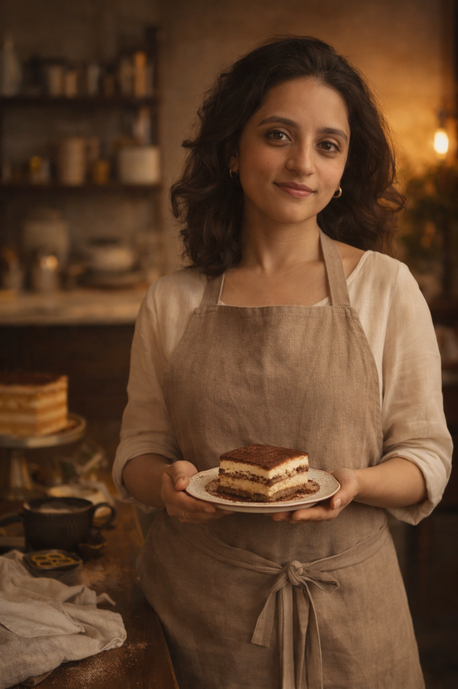

One Baker.
Twelve Countries.
Dolce began as a question: what would happen if someone made the world's most iconic desserts — but obsessively, from scratch, and only when ordered?

The Baker
Meet Dr. Hetanshi Desai
Dr. Hetanshi has been obsessed with desserts for as long as she can remember — not just eating them, but understanding them. Why does a Tiramisu taste flat when the mascarpone isn't properly whipped? Why does baklava fail without the syrup at exactly the right temperature?
She started Dolce in Vadodara with a simple premise: every order is made fresh, from authentic ingredients, following the recipe as close to its cultural origin as possible. No shortcuts. No batch-cooking. No compromise.
The result is a menu of 12 desserts — each from a different country — that have been tested, retested, and refined until they taste like they were made in the country they came from. Because that is the point.
Order From Dr. HetanshiThe Dolce Way
What We Believe
Authenticity Over Adaptation
Our Tiramisu uses real mascarpone — not cream cheese. Our Baklava uses rose water, not just honey. Every recipe is researched from its true home and made to honour that tradition.
Made to Order, Always
There is no refrigerated display case. Every dessert is made fresh after your order comes in. This is why we ask for 48 hours — not because we're slow, but because fresh takes time.
The Right Ingredients
Alphonso mangoes for the sticky rice. Real pistachios for the baklava. Good espresso for the tiramisu. The ingredients are non-negotiable. The flavour depends on them.
Personal Connection
Every order is handled personally by Dr. Hetanshi. You can ask questions, request adjustments, and expect a reply — because this is not a faceless operation. It is one person who loves dessert.
"Desserts don't solve problems.
But neither does broccoli."
This is the philosophy that drives every order, every recipe, every late night in the kitchen. Dessert is not a reward. It is not a guilty pleasure. It is the point.
Ready to Try the World
from Vadodara?
Browse the menu and place your pre-order with Dr. Hetanshi today.